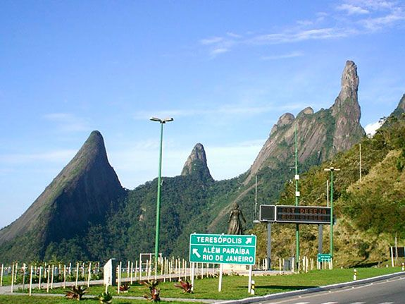
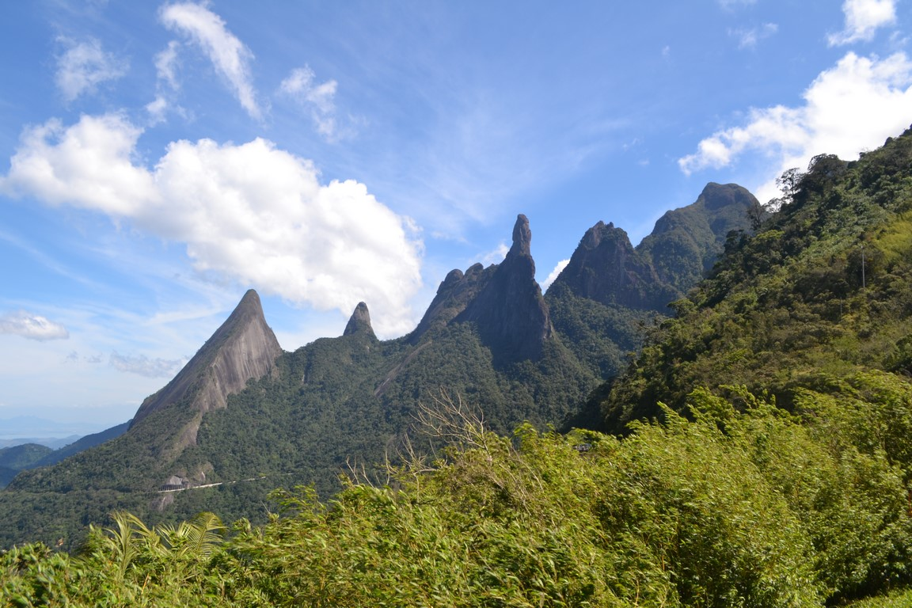

Mirante do Soberbo
Sobre o Mirante do Soberbo
Conhecido também por Mirante da Vista Soberba, o Mirante do Soberbo fica no município de Guapimirim, mas já próximo a entrada da cidade de Teresópolis. De lá é possível avistar o pico Dedo de Deus, símbolo do alpinismo brasileiro e um dos que se encontram na bandeira do Estado do Rio de Janeiro. Além do Dedo de Deus, pode-se avistar o pico do Escalavrado, a Boca do Peixe e outros pontos da Serra dos Órgãos. Junto ao Mirante encontram-se o Terminal Turístico Tancredo Neves, a Praça "Senta a Pua" (em homenagem aos combatentes brasileiros da Segunda Guerra Mundial) e o monumento à Dona Teresa Cristina, Imperatriz do BrasiL.
GALERIA DE FOTOS
 